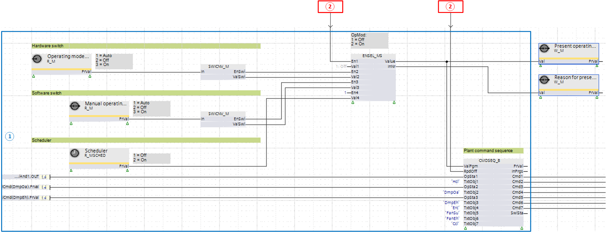

正常模式的典型输入块
现在的normal plant operating mode1...16 通过评估适用的输入块来确定。
通常使用以下输入块中的选择：
- Manual switch, e.g. operating mode switch, or 'On' / 'Off'
- Software switch
- Scheduler program
- Demand signal, e.g. from a VAV plant and room control
Input blocks for normal mode in the Programming editor

① 普通模式
② 异常模式（启用异常模式后快速关闭正常模式）
Present plant operating mode determination
在这个例子中，仅plant operating modes1 =“关”和 2 =“开”是transmitted.
最多可以将 16 种不同的设备操作模式传输到功能块 CMDSEQ_B。
示例中的输入块是：
可以通过两个功能块 W_M Write multistate 读取以下信息：
- Present operating mode
- Reason for the present operating mode
Providing input block signals
手动开关和软件开关提供枚举（1 =“自动”，2 =“关闭”，3 =“打开”）。
枚举被发送到功能块 SWICNV_M。它将信号按如下方式转换为输出 [EnSwi] 上的使能信号 0 或 1 以及输出 [ValSwi] 上的值 1 或 2：
- [IN] = 1 "Auto" ➔ Enable [EnSwi] = 0 "No", [ValSwi] = 1 "Off"
- [IN] = 2 "Aus" ➔ Enable [EnSwi] = 1 "Yes", [ValSwi] = 1 "Off"
- [IN] = 3 "On" ➔ Enable [EnSwi] = 1 "Yes", [ValSwi] = 2 "On"
功能块SWICNV_M将信号 [EnSwi] 和 [ValSwi] 发送到功能块ENSEL_MS.
调度程序读取 BACnet 对象 Timeswitch 的值，并将当前状态 1 =“Off”或 2 =“On”转发到功能块 ENSEL_MS。
Present signal selection
现在要考虑的当前输入块的选择发生在功能块 ENSEL_MS 中。使用具有最小编号 [En1]...[En3] 的有效输入，其值通过输出 [Value] 发送到功能块 CMDSEQ_B。
在示例中，这意味着：
- If input [En1] has value 1 (manual switch to "Off" or "On"), the value of input [Val1] (1 = "Off" or 2 = "On") is forwarded to output [Value]. The other inputs [En2]...[En3] are not considered.
- If input [En1] has value 0 (manual switch to Auto), this input is ignored and the next input [En2] is considered.
- If input [En2] has value 1 (software switch to "Off" or "On"), the value of input [Val2] (1 = "Off" or 2 = "On") is forwarded to output [Value]. Input [En3] is not considered.
- If input [En2] has value 0 (software switch to Auto), this input is ignored and the next input [En3] is considered.
- The value on input [En3] is defined on the function block with 1, i.e. the scheduler is always active. The value of input [Val3] (1 = "Off" or 2 = "On") is forwarded on output [Value].